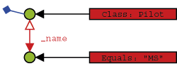

4. Queryingdb4o supplies three querying systems, Query-By-Example (QBE) Native Queries (NQ), and the SODA API. In the previous chapter, you were briefly introduced to Query By Example(QBE). Query-By-Example (QBE) is appropriate as a quick start for users who are still acclimating to storing and retrieving objects with db4o. LINQ is the recommended db4o querying interface for .NET platforms. SODA is the underlying internal API. It is provided for backward compatibility and it can be useful for dynamic generation of queries, where LINQ and NQ are too strongly typed. 4.1. Query by Example (QBE)When using Query By Example (QBE) you provide db4o with a template object. db4o will return all of the objects which match all non-default field values. This is done via reflecting all of the fields and building a query expression where all non-default-value fields are combined with AND expressions. Here's an example from the previous chapter:
Querying this way has some obvious limitations: - db4o must reflect all members of your example object. - You cannot perform advanced query expressions. (AND, OR, NOT, etc.) - You cannot constrain on values like 0 (integers), "" (empty strings), or nulls (reference types) because they would be interpreted as unconstrained. - You need to be able to create objects without initialized fields. That means you can not initialize fields where they are declared. You can not enforce contracts that objects of a class are only allowed in a well-defined initialized state. - You need a constructor to create objects without initialized fields. To get around all of these constraints, db4o provides the Native Query (NQ) system. 4.2. Native QueriesWouldn't it be nice to pose queries in the programming language that you are using? Wouldn't it be nice if all your query code was 100% typesafe, 100% compile-time checked and 100% refactorable? Wouldn't it be nice if the full power of object-orientation could be used by calling methods from within queries? Enter Native Queries. Native queries are the main db4o query interface and they are the recommended way to query databases from your application. Because native queries simply use the semantics of your programming language, they are perfectly standardized and a safe choice for the future. Native Queries are available for all platforms supported by db4o. 4.2.1. ConceptThe concept of native queries is taken from the following two papers:- Cook/Rosenberger, Native Queries for Persistent Objects, A Design White Paper - Cook/Rai, Safe Query Objects: Statically Typed Objects as Remotely Executable Queries 4.2.2. PrincipleNative Queries provide the ability to run one or more lines of code against all instances of a class. Native query expressions should return true to mark specific instances as part of the result set. db4o will attempt to optimize native query expressions and run them against indexes and without instantiating actual objects, where this is possible.4.2.3. Simple ExampleLet's look at how a simple native query will look like in some of the programming languages and dialects that db4o supports:C# .NET
Java JDK 5
Public Class PilotHundredPoints Inherits Predicate Public Function Match (pilot As Pilot) as Boolean If pilot.Points = 100 Then Return True Else Return False End Function End Class A side note on the above syntax: For all dialects without support for generics, Native Queries work by convention. A class that extends the com.db4o.Predicate class is expected to have a boolean #Match() method with one parameter to describe the class extent:
When using native queries, don't forget that modern integrated development environments (IDEs) can do all the typing work around the native query expression for you, if you use templates and auto-completion. The following example shows how to create an autocompletion code snippet in Visual Studio 2005. Create a "nq.snippet" file in any text editor. Paste the following code:
Save the file. In the Visual Studio 2005 open Tools/Code SnippetsManager Select language "Visual c#" if not yet selected. Press "Import..." button and select the newly created file. Select "Visual c#" as the location and press "Finish" button. Now you can use the snippet by selecting it from "Edit/InstelliSense/Insert Snippet..." menu. 4.2.4. Advanced ExampleFor complex queries, the native syntax is very precise and quick to write. Let's compare to a SODA query that finds all pilots with a given name or a score within a given range:
Here is how the same query will look like with native query syntax, fully accessible to autocompletion, refactoring and other IDE features, fully checked at compile time: C# .NET 2.0
Java JDK 5
4.2.5. Arbitrary CodeBasically that's all there is to know about native queries to be able to use them efficiently. In principle you can run arbitrary code as native queries, you just have to be very careful with side effects - especially those that might affect persistent objects.Let's run an example that involves some more of the language features available.
4.2.6. Native Query PerformanceOne drawback of native queries has to be pointed out: Under the hood db4o tries to analyze native queries to convert them to SODA. This is not possible for all queries. For some queries it is very difficult to analyze the flowgraph. In this case db4o will have to instantiate some of the persistent objects to actually run the native query code. db4o will try to analyze parts of native query expressions to keep object instantiation to the minimum.The development of the native query optimization processor will be an ongoing process in a close dialog with the db4o community. Feel free to contribute your results and your needs by providing feedback to our db4o forums(Forums are accessible through free db4o membership ). With the current implementation, all above examples will run optimized, except for the "Arbitrary Code" example - we are working on it. 4.2.7. Full source
4.3. LINQdb4o querying syntax has got even easier with the introduction of .NET LINQ queries. LINQ allows you to write compile checked db4o queries, which can be refactored automatically when a field name changes and which are supported by code auto-completion tools. In order to use LINQ you will need to add reference to Db4objects.Db4o.Linq.dll and usage to your program class:
If you are already familiar with LINQ syntax, you can just start writing LINQ to query db4o. Otherwise you may want to familiarise yourself with LINQ resources on http://msdn2.microsoft.com/en-us/library/bb397926.aspx MSDN. Note that LINQ requires at least .NET 3.5. 4.3.1. Linq ExamplesLet's prepare some objects in our database to query against:
The simplest LINQ query will look like this:
You can see that we are using db4o object container as a datasource, the rest of the syntax is generic to all LINQ queries. Now let's try a bit more complex selection:
So we can constrain on one object and retrieve a list of others. You can even create completely new objects based on the retrieved information using select new MyObject(field1, field2...). Try to experiment with different LINQ queries against db4o database. 4.3.2. Performancedb4o query processor is based on SODA queries, therefore LINQ query is analysed and converted to SODA syntax in the runtime. However, in some cases this conversion is not possible. This can happen when query is constrained against aggregates or projections of a field value and in other cases when SODA equivalent does not exists. For example:
The query still works, but it requires instantiation of all candidate objects, which is much less performant than SODA query. 4.3.3. LINQ for Compact FrameworkCompact Framework version 3.5 contains LINQ implementation for querying objects, however it does not contain the namespace System.Linq.Expressions, which is used by all optimized LINQ providers. Luckily there is a solution to this problem. Mono implementation of System.Core can be used to support optimized LINQ providers and expression interpreter contributed by Mainsoft to Mono's System.Core can be used to support full LINQ expression trees.These assemblies were used by db4o team to compile a new assembly, System.Linq.Expressions.dll, which provides LINQ support to .NET Compact Framework 3.5. In order to use the full LINQ functionality including optimisation, add a reference to System.Linq.Expressions.dll in your project and enjoy. System.Linq.Expressions.dll can be found in bin\compact-3.5 folder of your distribution. You can also examine the code in src\Libs\compact-3.5\System.Linq.Expressions or db4o SVN . 4.4. SODA Query APIThe SODA query API is db4o's low level querying API, allowing direct access to nodes of query graphs. Since SODA uses strings to identify fields, it is neither perfectly typesafe nor compile-time checked and it also is quite verbose to write. For most applications LINQ andNative Queries will be the better querying interface. However there can be applications where dynamic generation of queries is required, that's why SODA is explained here. 4.4.1. Simple queriesLet's see how our familiar QBE queries are expressed with SODA. A new Query object is created through the #Query() method of the ObjectContainer and we can add Constraint instances to it. To find all Pilot instances, we constrain the query with the Pilot class object.
Basically, we are exchanging our 'real' prototype for a meta description of the objects we'd like to hunt down: a query graph made up of query nodes and constraints. A query node is a placeholder for a candidate object, a constraint decides whether to add or exclude candidates from the result. Our first simple graph looks like this.  We're just asking any candidate object (here: any object in the database) to be of type Pilot to aggregate our result. To retrieve a pilot by name, we have to further constrain the candidate pilots by descending to their name field and constraining this with the respective candidate String.
What does #Descend mean here? Well, just as we did in our 'real' prototypes, we can attach constraints to child members of our candidates.  So a candidate needs to be of type Pilot and have a member named'_name' that is equal to the given String to be accepted for the result. Note that the class constraint is not required: If we left it out, we would query for all objects that contain a'_name' member with the given value. In most cases this will not be the desired behavior, though. Finding a pilot by exact points is analogous.
4.4.2. Advanced queriesNow there are occasions when we don't want to query for exact field values, but rather for value ranges, objects not containing given member values, etc. This functionality is provided by the Constraint API. First, let's negate a query to find all pilots who are not Michael Schumacher:
Where there is negation, the other boolean operators can't be too far.
We can also constrain to a comparison with a given value.
The query API also allows to query for field default values.
It is also possible to have db4o sort the results.
All these techniques can be combined arbitrarily, of course. Please try it out. There still may be cases left where the predefined query API constraints may not be sufficient - don't worry, you can always let db4o run any arbitrary code that you provide in an Evaluation. Evaluations will be discussed in a later chapter. To prepare for the next chapter, let's clear the database.
4.4.3. ConclusionNow you have been provided with the following alternative approaches to query db4o databases: Query-By-Example,.? net LINQ, Native Queries, SODA.Which one is the best to use? Some hints: - LINQ is a standard typesafe queries for .NET languages and is recommended for use with .NET version of db4o. - Native queries are targeted to be the primary interface for db4o, so they should be preferred. - With the current state of the db4o query optimizer there may be queries that will execute faster in SODA style, so it can be used to tune applications. SODA can also be more convenient for constructing dynamic queries at runtime. - Query-By-Example is nice for simple one-liners, but restricted in functionality. If you like this approach, use it as long as it suits your application's needs. Of course you can mix these strategies as needed. We have finished our walkthrough and seen the various ways db4o provides to pose queries. But our domain model is not complex at all, consisting of one class only. Let's have a look at the way db4o handles object associations in the next chapter . 4.4.4. Full source
|